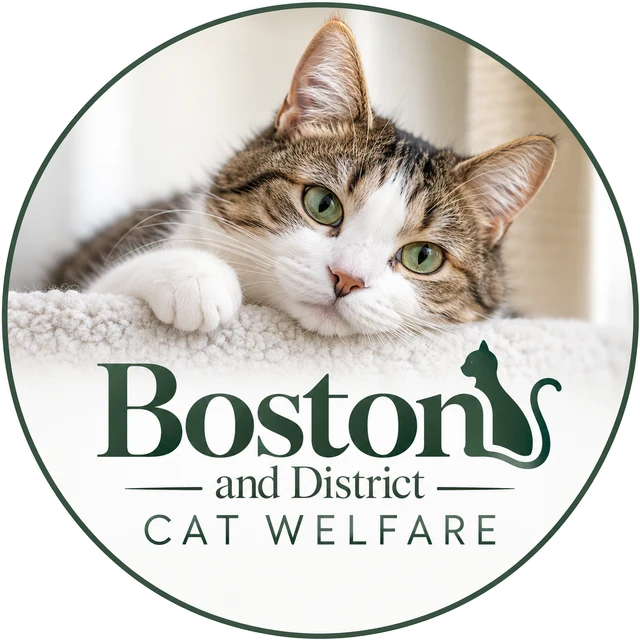

15:00AfternoonReeds along a dyke, a far line of trees
Three things we do, one cat at a time.
Our aim, in our own words, is to rehabilitate, neuter and rehome unwanted cats and kittens in the local area. Walk the bank with us.
05:00DawnFirst light over flat fields
Under a big Fen sky, every cat gets a tomorrow.
A small registered charity (number 1091594) at New Bolingbroke that rehabilitates, neuters and rehomes unwanted cats and kittens in Boston and the district around it.

Scroll from dawn to night06:30First lightThe sun clears the horizon
We are a small local charity, not an emergency service. If a cat is hurt or in danger, act first, then call.
If a cat needs help now
The RSPCA covers England and Wales. If you know of an unwanted cat in Boston and the district around it, call us on 07426 170295 and we will talk it through.
08:00MorningFrost on the stubble, a pale sky
We are Boston and District Cat Welfare, a registered charity based at New Bolingbroke, out on the Lincolnshire Fens near Boston.
We have been on the Charity Commission register since 10 April 2002. Our work is local and practical: unwanted cats and kittens, taken in, cared for, neutered and found new homes.
Like every registered charity, we are run by trustees and report to the Charity Commission for England and Wales. Our public entry on the register shows our trustees and our filing history.
Boston and District Cat Welfare is a small charity whose aim is to rehabilitate, neuter and rehome unwanted cats and kittens in the local area. Fund raising basically covers the food, litter and vets bills. We have a policy of non destruction.
Tap an underlined phrase to follow it through the day.
10:00Mid-morningThe frost lifts off the stubble
Rehoming is one of the three things we do. Every cat and kitten that leaves us goes to a home that suits them.
Please call before visiting. We would rather tell you everything over the phone than guess at it here.
12:00MiddayBig cloud over the fen fields
Flat fields. Long, straight drains. A sky that comes all the way down to the ground.
Look closer.
There is a cat in the grass.
Our promise
“We have a policy of non destruction.”
It is one short line in our register entry, and everything we do grows from it. A cat that comes to us is not a problem to be cleared away. It is a life, and it gets a tomorrow.
13:30Early afternoonHigh sun, long views
Our register entry names three things we do, and neutering is one of them. It is the quiet work that means fewer cats need rescuing in the first place.
A neutered cat cannot have, or father, kittens. Every litter that never happens is a litter that never needs a home.
Unwanted cats and kittens are exactly who we exist for. Neutering is how that number starts to come down.
For advice about your own cat, talk to your vet. For a question about our work, call us on 07426 170295.
15:00AfternoonReeds along a dyke, a far line of trees
Our aim, in our own words, is to rehabilitate, neuter and rehome unwanted cats and kittens in the local area. Walk the bank with us.
1 of 3
Unwanted cats and kittens come to us from Boston and the district around it. They are fed, seen by the vet and given the time they need to recover and settle.
2 of 3
Neutering is written into our aims. Every cat neutered today means fewer unwanted litters tomorrow, and fewer cats who need us in the first place.
3 of 3
The walk ends at a front door. With our policy of non destruction, a cat waits with us for the right home rather than running out of time.
16:30Late afternoonA straight track to the horizon
“Fund raising basically covers the food, litter and vets bills.”
That is the whole of it, in our own words. Tap each one to see it at work.
Our latest filing
£42,373
Income for the financial year ending 31 January 2026, as reported to the Charity Commission.
We will not guess at other numbers here. Our spending, our filing history and our trustees are public on our entry on the register of charities.
See charity 1091594 on the register (opens in a new tab)
To find out what is needed most right now, give us a ring.
17:00Long shadowsThe drove turns towards evening
Every gift goes where our fundraising always goes: food, litter and vets bills. These are the ways to give.
Call 07426 170295 and we will arrange your gift with you.
Write to us at Hawthorns, Main Road, New Bolingbroke, Lincolnshire PE22 7LN. If you would like to send a cheque, call first so we can tell you who to make it payable to.
Cat food and cat litter are what our fundraising pays for, so gifts of them help directly. Please call first to arrange it.
If you pay UK tax, ask us whether your gift can be Gift Aided.
Gifts to UK charities in a will are usually free of Inheritance Tax. If you are thinking of remembering us, speak to your solicitor and give our full name and charity number, 1091594.
Planning to raise money for the cats? Ask us before you start and we will help you get it right.
This website does not take payments.
18:00Golden hourLow sun over the field edge
Every way to help starts the same way: give us a call on 07426 170295.
If you can offer a cat or kitten a home, call us and we will talk it through with you. How adoption starts
Small charities run on helping hands. Ring us to ask how your time could help.
If you could look after a cat in your own home for a while, ask us whether fostering is something we can arrange.
Funds go on food, litter and vets bills. Ways to give
19:00EveningThe sun on the field edge
If yours is not here, call us on 07426 170295.
Call us on 07426 170295. We will tell you which cats and kittens are looking for homes and explain how adoption works with us. More about adopting
Please call before visiting. We do not publish opening hours, so ring first and we will tell you when is a good time.
We are not an emergency service. If a cat is injured and you can reach it safely, take it to a vet. If it is in danger or badly hurt and you cannot get near, call the RSPCA on 0300 123 8960. What to do, step by step
Our aim is to help unwanted cats and kittens in the local area. Call us, tell us about the cat, and we will talk about what we can do.
It is our own line, from our entry on the register: “We have a policy of non destruction.” If you would like to know more about how it works in practice, get in touch and we will tell you.
In our own words, “fund raising basically covers the food, litter and vets bills.” Our income for the year ending 31 January 2026 was £42,373, and our filings are public on the Charity Commission register. Where the money goes
If you pay UK tax, ask us whether your gift can be Gift Aided.
Ask us how you can help. Ring 07426 170295 and we will tell you what would make the most difference right now.
19:30Last lightThe sun on the rim of the fields
The best way to reach us is by phone or by post. Please call before visiting.
Open in Maps (Google Maps, opens in a new tab) Apple Maps (opens in a new tab)
Tap a dark arm of the fingerpost to copy our address. Tap the amber arm to ring us.
20:00DuskAfterglow over still water
Origin Labs carries our cats’ story beyond the Fens, to new supporters across the crypto community.
Registered with the Charity Commission for England and Wales, no. 1091594